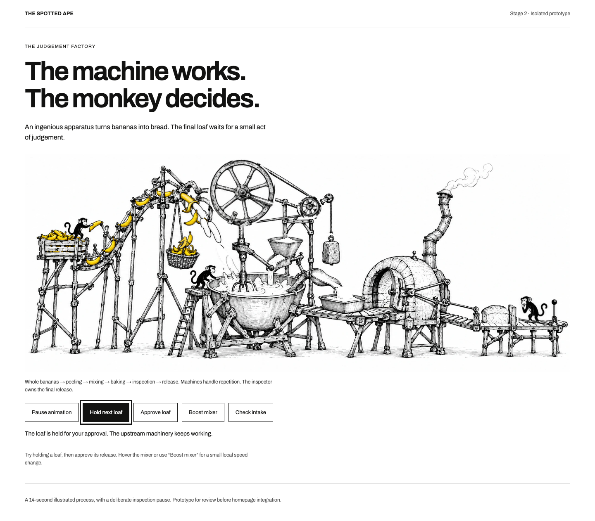
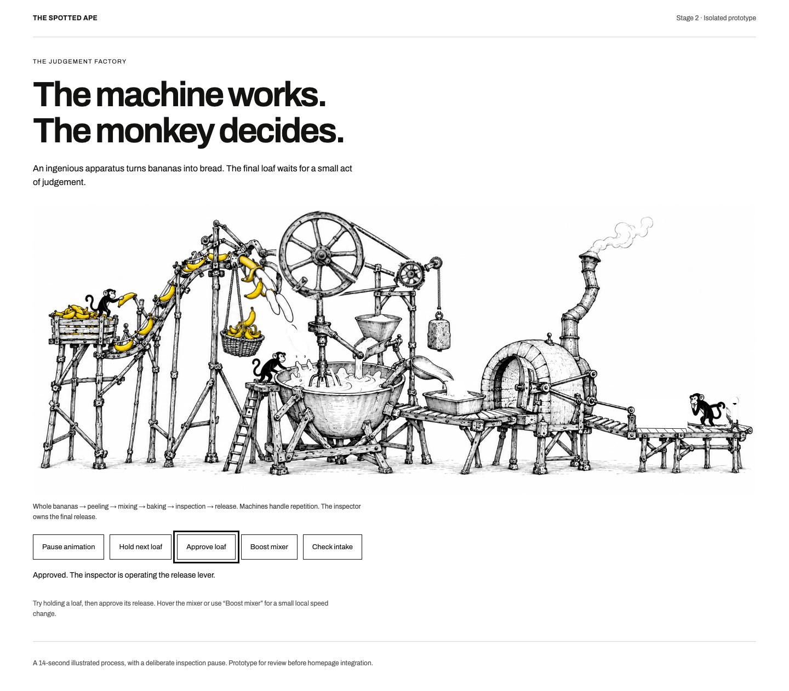
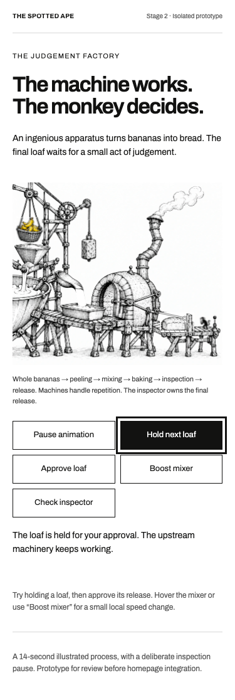
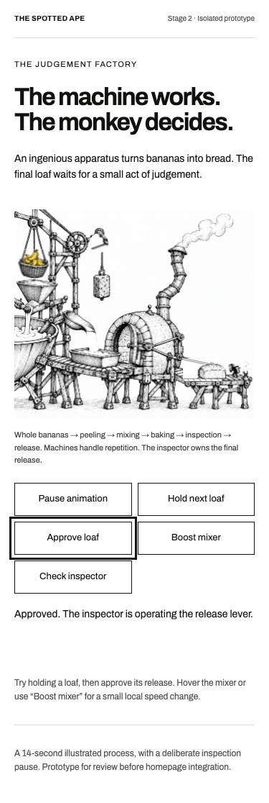
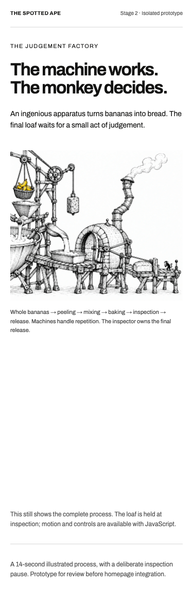

Try a deliberate hold.
Open the live prototype and select Hold next loaf. Once inspection finishes, the loaf stays behind the closed stop while upstream machinery continues. Select Approve loaf to operate the lever and let it leave.
Pause/play preserves the scene. Boost mixer changes only the local mechanism. All controls work by keyboard and touch. Reduced motion provides a still with an explicit approval state; the no-JavaScript version retains the illustrated process.
One complete loop / 14 seconds
Machines repeat.
The inspector intervenes.
The recording is sampled at 6fps. The live browser animation uses its native animation timeline.
A banana travels up the feed, skin and fruit separate, the mixer works, batter enters the tin and a loaf emerges. The inspector pauses before the lever lowers the stop. The small upstream mechanisms continue during that pause.
Desktop: hold and release.


Mobile: one small inspector.




Motion is optional.



Ready for review.
Astro diagnostics and production build pass. Browser checks cover keyboard approval, held inspection with continuing upstream motion, pause/resume, hidden-tab and offscreen suspension, responsive resizing, reduced motion and no JavaScript.
The animation uses the approved artwork with SVG motion layers, compressed local images and a small native TypeScript controller. It adds no animation framework or application dependency.
Read implementation details and limits ↗ · Browser evidence ↗ · Size and preservation checks ↗
Review the motion, inspection sequence and mobile composition before Stage 3 refinement and integration.